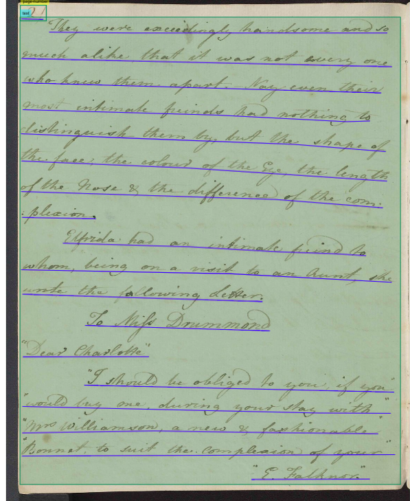
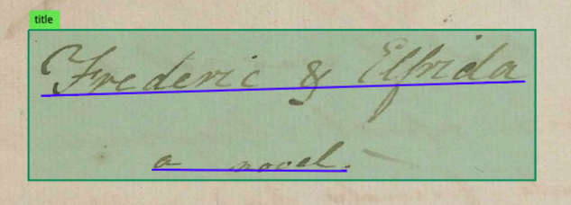
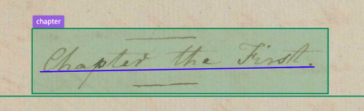
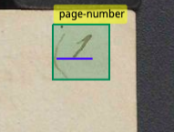
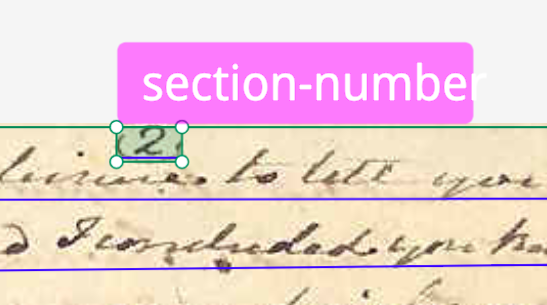
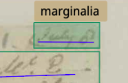
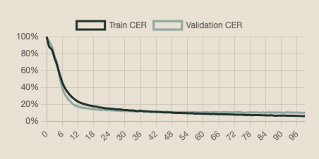

Annotation Campaign
Task Definition
We decided to perform an annotation campaign on some of Jane Austen’s manuscripts, choosing three texts from
different moments in her life to create an homogeneous batch of texts that cover her lifetime as an
author. For the content of the manuscripts we followed the diplomatic transcriptions carried out in the Scholarly
Digital Edition Jane Austen Fiction Manuscripts.
Our aim was to create a Model able to
generate an automatic transcription of all of Jane Austen’s manuscripts, part of our potential Semantic Digital
Library Semantic Austen, that would include all the work done in the existing SDE. Therefore we
created this model on Austen's handwriting so that any other existing holograph texts of her can be transcribed
using it.
Context
Jane Austen (1775-1817) was an English writer during the English romanticism of the 19th century.
Remembered as one of the most important female authors of English literature, she is known primarily for her
novels that explore topics of marriage, social status and economic situation of women from the female
perspective of 18-19th century English society.
Only some of her manuscripts survive the pace of time and are in possession of several English libraries
that digitize them and allow a visualization of them.
We chose to work on three of her surviving manuscripts available online.
-
Juvenilia: it is a collection of stories that she wrote in the span of six years (1787-1793). The first volume of the manuscript is property of the Bodleian Library, Oxford that digitalized and allows a visualization and download of the images.
-
The Watsons: it is an unfinished work written around 1803, and probably abandoned after Austen’s father's death. The incomplete work is divided in two parts and the second is property of the Bodleian Library, Oxford that digitalized and provides the visualization and download of the images.
-
Persuasion: her latest novel written before her death; it was published postmortem in 1817. The only surviving holographs of the novel are the last two chapters that are property of the British Library that digitalized and provided visualization of the manuscript.
The images from the Bodleian Library, Oxford are released under the CC-BY-NC license and those from the British Library are of public domain.
The Scholarly Digital Edition (SDE) called Jane Austen Fiction Manuscripts was edited by Kathryn Sutherland at King's College, Oxford. On the edition's website, the editors
made available the images of the digitized surviving manuscripts in possession of the several
institutions and made an extensive philological work on the manuscripts while providing the diplomatic
transcriptions of the texts.
For the annotation of the manuscripts to include as training data for our model, we used the diplomatic transcriptions included on the SDE as ground
truth.
Although the SDE is a very exhaustive digital edition, it is slightly outdated and does not make use of semantic and interoperable elements. Hence in our project we propose ways to make this Scholarly Digital Edition into a Semantic Digital Library, potentially called Semantic Austen.
In Semantic Austen all the work done in the SDE is taken into consideration and taken forward, providing the images of the manuscripts in IIIF, allowing for the download of the transcriptions in XML/TEI and enriching metadata with LOD technologies, such as links to authority files. Providing external links related to Jane Austen's life and work can contribute to make this highly respected scholarly endeavor a semantic and state of the art website.
Corpus Selection
As mentioned before, we selected the three texts Juvenilia, The Watsons and Persuasion, which are representative of different periods of Austen’s work and handwriting (from childhood to maturity). The aim behind this choice was training our model on the different stages of her handwriting, for it to be able to transcribe all the existing Jane Austen's manuscripts included in our SDL and potentially any other. Therefore, at a first stage, we decided not to use a pre-existing English HTR model for the training of ours to create one from scratch, specifically and solely based on her writings.
We began with the annotation of 50 pages between the three draft works and later we decided to expand the total number of pages to
make the corpus bigger and allow the model to work better.
The final corpus comprised 68 annotated pages between the three texts ( 28 pages from Juvenilia,
25 pages from The Watsons and 15 pages from Persuasion).
Annotation Guidelines
Our campaign acts in accordance with the OCR and Transkribus guidelines.
Furthermore, to carry out the annotation campaign, we relied as said above on the diplomatic transcription provided by the SDE. The diplomatic edition aligns with level 2 of the OCR-D Guidelines for Ground Truth as the editors' objective is to preserve original texts as accurately as possible, like stated in the SDE as well.
Since the texts in the manuscripts follow a certain logic, we defined some internal guidelines for special cases often encountered. We divided them between layout and text guidelines.
Layout Guidelines
We defined custom made regions to distinguish structural elements of the page:
- Text: region that covers main part of the page, it is the actual content of the drafts. 
- Title: used in Juvenilia since it is a collection of different stories. 
- Chapter : used in Juvenilia and Persuasion. 
- Page-number: used in Juvenilia. 
- Section number: used in The Watson since she wrote on separate numbered quires. 
- Marginalia: used in Persuasion in some pages to include dates (day and month). 
- All lines traced on the page that are not text baselines were ignored in the transcription.
Text Guidelines
The handwritten text conveyed peculiarities that had to be specified manually, such as corrections and additions made by the author. We reported them as it was done in the SDE.
- Corrections on top of erased text were defined in an extra baseline; the erased text was tagged as strikethrough while we tagged the correct text on top as superscript;
- Additions of text (^) were defined in an extra baseline and tagged as superscript and described with the custom tag addition;
- In cases of erased text on top of which was a correction also pointed out as addition by (^), we only tagged the correction as superscript;
- We didn’t include (^) but expressed it with the addition tag;
- Letters written with pencil and later erased weren’t transcribed;
- We followed diplomatic transcription in punctuation;
- Mʳ and similar were normalized into Mr.
Annotation Platform
For our annotation campaign we used the Transkribus platform, that allowed us to upload the images of the manuscripts from the Bodleian Library and the British Library and carry out our annotation and the training of our HTR Model. The whole work conducted on the collection is available here.
Pilot
The pilot was performed to understand how efficient our model was, since we created it from scratch and did not use an already pre-existing English HTR model. Using 50 pages between the three novels made us understand that our annotation process was not correct yet and that we had to make the dataset bigger to receive the results that we expected.
Campaign
The campaign began annotating the pilot (50 pages and 8570 words) with the transcriptions of the SDE, as authoritative and labeled as ground truth. We trained our first model selecting 10% of the pages as the validation set, obtaining a Character Error Rate (CER) of 17.03%. The model did not meet our expectations, therefore we moved on from this starting point.
We decided to retrain the model by adding a small set of newly annotated pages to make the corpus bigger and get a higher model accuracy. Thus we increased the number to 68 annotated pages and obtained a CER of 16,47%.
However, we weren’t content with the results, and we performed an additional “fine-tuning” with the Transkribus English Handwriting M3 base model, trained on English handwriting from 18-20th cent. At this stage the CER increased to 18% due to overfitting.
Therefore, to obercome this issue, we did one last modification to the parameters to train our model. We increased the percentage of pages used for the validation, from 10% to 16%, using the same base model and epochs number (100), and we finally reached a CER of 10,11%.
The following training chart describes the CER for our ultimate model, Jane Austen HTR v4.0:
Character Error Rate (CER) is the ratio of characters that have been transcribed incorrectly by the Text Recognition model. The learning curve signifies the accuracy of our model: the y-axis is defined as “Accuracy in CER” and is indicated in percentage, while the x-axis represents the “epochs”.
Evaluation of the Results
Our outcome CER of 10.11% is to be considered highly functional, especially considering the rather small corpus the annotation campaign was conducted on and the complexity of the drafts, full of erasures and additions. Overall, results of 10% or under for hand-written texts are declared as very efficient by the Transkribus Guidelines as well. The created model would be fast to apply to all manuscripts included in our SDL, as it produces reliable base text that requires minor manual intervention, due to the recurring complex deletions and corrections.
Comparison: Gemini OCR VS Transkribus
After thoughtful consideration on the capabilities of our HTR model based on Jane Austen’s manuscripts and created with Transksribus, we wanted to test the proficiency of other OCR systems. We tested Gemini 3 flash's OCR and to understand its efficiency we only provided the drafts' images without giving any context of the text included in them.
To compare the accuracy of Gemini OCR against what our HTR model trained with Transkribus was able to do, we selected 6 new pages between the novels ( 2 from Juvenilia, 2 from The Watsons and 2 from Persuasion); these pages were not used in the training model. The same pages were given to both models.
Gemini gave exceptional results, since it was able to retrieve the provenance of the text from the images. The LLM understood that the pages were Jane Austen's texts and identified the specific part of the novel. It provided highly accurate if not perfect text recognition following a diplomatic approach, handling layout, cancellations and superscript corrections.
Transkribus was very accurate, though it still struggled with the constant cancellations and corrections done by the author; however in one page our model did not understand where the text began, as the page was missing a part of the text. Therefore we are aware that our HTR model is very good yet not perfect.
Conclusions
Ultimately taking into consideration all the work done and the analysis performed, the model that we created is a very good starting point for what concerns an annotation campaign, as it is able to perform text recognition of handwritten manuscripts with difficult corrections and layout. Nevertheless, we realize that an LLM such as Gemini that is trained on thousands of texts has great performances, with results almost perfect compared to what our small model can do.
Therefore for the construction of a Semantic Digital Library the use of an LLM with OCR would get better results that our model trained in Traskribus, yet this annotation campaign is just a starting point for what can be done in the future and for the work we could create for our SDL Semantic Austen.
Publication and use
The HTR model Jane Austen HTR v4.0 was created for the sake of this project and is now public on the Transkribus platform. In our annotation campaign and SDL project we have tried to apply and comply with the FAIR Principles, making the results of our research findable, accessible, interoperable and reusable.